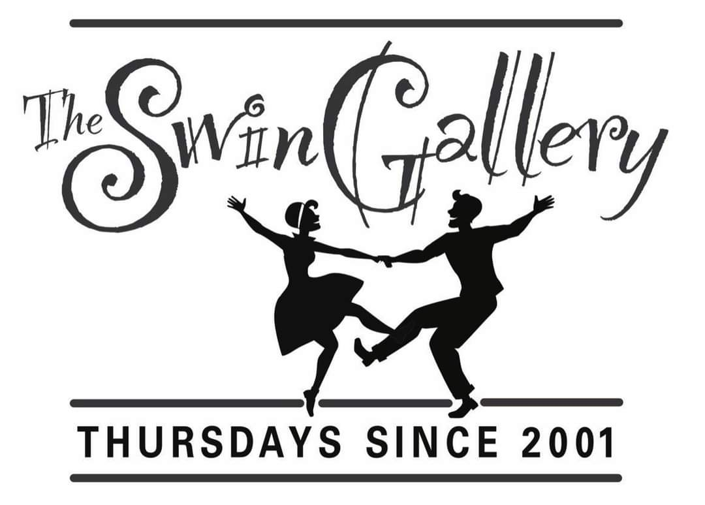
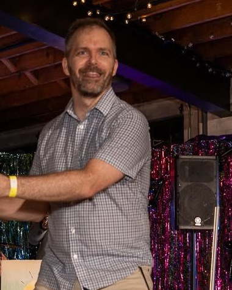
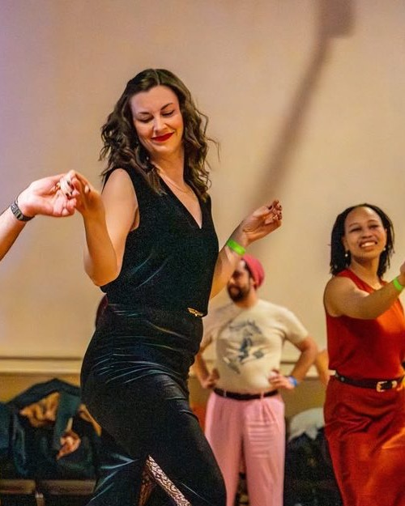
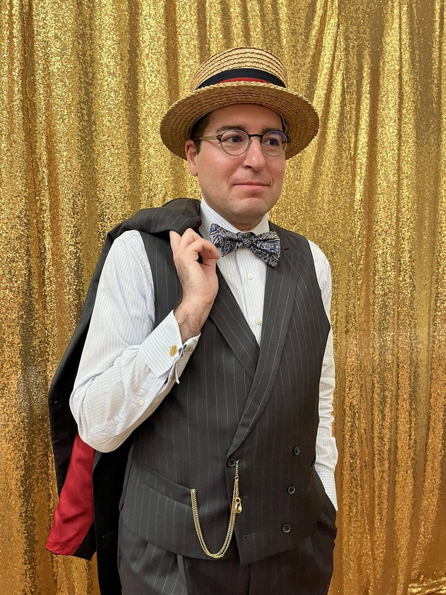

About us
Dancing every Thursday since 2001.
We promote the dance community by providing social, educational and artistic opportunities in a welcoming and safe environment.
Our story
Started by dancers, run by dancers
SwinGallery was created by a group of devoted dancers on January 4, 2001. Since then, dozens of organizers, instructors, DJs and volunteers have come and gone.
We specialize in Lindy Hop, East Coast Swing, Blues, Charleston and Balboa, and we've been Cincinnati's weekly home for them for more than two decades.

The team
Who runs Thursday nights
-

Photo: Hannah Joy Captures Owner, Head Instructor & DJ
Jesse Fatherree
info@swingallery.orgRead Jesse's bio
Jesse got introduced to swing dance in Cincinnati in 1998 and jumped in head first from the start. After being inspired by classes with Frankie Manning, Ryan Francois and Kevin St Laurent, he quickly began to travel from coast to coast to learn and compete.
His most challenging dance success was the 2003 Heart Health Hop, where 42 participants danced for 52 hours and 3 minutes to set a Guinness World Record for the longest dance party marathon.
Jesse is one of the original founders of the SwinGallery, Ohio's longest-running weekly swing dance. Since 2001 he's been teaching weekly classes and regional workshops in Lindy Hop, Charleston, Balboa, Blues and East Coast Swing. Over the years, he's also been into West Coast Swing, Salsa and, more recently, Argentine Tango.
-

Photo: Samantha Kunz Photography Co-Owner, Instructor & DJ
Samantha Uebel
Read Sam's bio
Sam loved dance from a very early age, when she aspired to be a Fly Girl on the '90s sketch comedy series In Living Color. #CareerGoals!
She fell in love with swing dance in college in 2007, where she got her start in the Louisville scene. She then moved to Nashville, then Cincinnati. Sam now dances and teaches regularly at SwinGallery, Cincinnati's longest-running Lindy Hop event (every Thursday).
Her favorite styles of dance are Blues, Balboa and Lindy Hop, and she loves building the dance community.
-

Event Management & DJ
David Rickey
DJs, instructors and generally awesome people
- Jacob Donnermeyer
- Emma Durham
- Elizabeth Gilbert
- Greta Schraer
- Katie Spang
- Meghan Stapleton
- Collin Stapleton
- Abby Thrasher
- Daniel Verdon
Come dance with us Thursday.
Beginner lesson at 8:30, social dancing from 9:00.